Prevenzione
Analisi predittive su larga scala, valutazione personalizzata del rischio e modelli epidemiologici avanzati per anticipare l'insorgenza delle malattie.
Nuovi scenari per la prevenzione, la diagnosi e la cura. Un convegno nazionale per discutere opportunità, limiti, responsabilità etiche e impatti organizzativi dell'IA in ambito sanitario.
L'intelligenza artificiale sta trasformando ricerca, formazione e salute. Il convegno offre a medici ospedalieri, clinici, professionisti della medicina territoriale, medici di base, pediatri, studiosi e cittadini una panoramica dei nuovi scenari aperti dall'IA in ambito sanitario.
Analisi predittive su larga scala, valutazione personalizzata del rischio e modelli epidemiologici avanzati per anticipare l'insorgenza delle malattie.
Sistemi di supporto decisionale multimodali basati su imaging, segnali biomedici e biosanitari, generazione di ipotesi collegando ricerca di base e trial clinici per migliorare accuratezza e tempestività.
Terapie mirate, medicina di precisione e monitoraggio intelligente per la gestione delle cronicità e dei nuovi modelli di assistenza territoriale.
La registrazione al convegno è obbligatoria e gratuita, con posti limitati fino a esaurimento disponibilità. La partecipazione è aperta a ricercatori, clinici, professionisti e aziende del settore.
Registrati Gratuitamente Ora!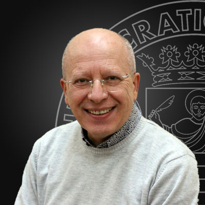
Professore Ordinario @UniSA
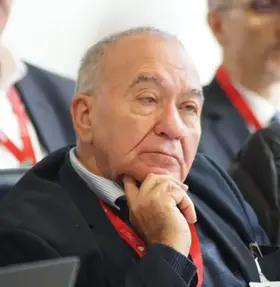
Presidente Emerito di @ITIM
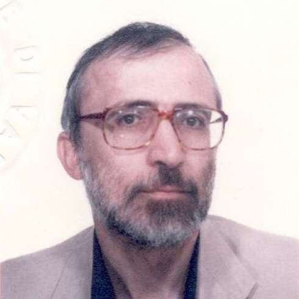
Professore Emerito @UniMIB
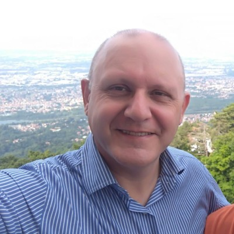
Professore Associato @UniSalento
Professore Ordinario @UniSA
Il 19 giugno è dedicato agli aspetti scientifici e alle applicazioni cliniche. Il 20 giugno ospita la sezione istituzionale, una tavola rotonda e la presentazione di progetti nazionali in ambito salute.
Programma su due giornate: sessione scientifica e casi applicativi il 19 giugno, istituzioni e progetti PNRR il 20 giugno.
DIEM, DIFARMA, DIPMED, Comune di Salerno, Presidente AITIM e altri rappresentanti.
Prof. Pierluigi Ritrovato · Università degli Studi di Salerno
Dott. Gennaro Gambardella · TIGEM
Prof. Giorgio De Nunzio · Università del Salento
Prof. Mario Bochicchio · Università degli Studi di Bari
Dott. Francesco Iorio · Human Technopole
Prof. Riccardo Resciniti · Fondazione COTEC, BridgeX
Fabrizio Clemente · CNR, Comitato Etico Campania 2
Prof. Angelo Marcelli · Università degli Studi di Salerno
Dott. Gianantonio Pellicanò · Presidente @ITIM, Neuroradiologia Istituto Prosperius Villa Cherubini IFCA di Firenze
Prof. Stefano Mazzoleni · Politecnico di Bari, Scuola IMT Alti Studi Lucca
Prof. Eugenio Santoro · Istituto Mario Negri
Prof. Giuseppe Lanza · Università di Catania, IRCCS Oasi di Troina
Prof.ssa Elisa Ciceri · Istituto Neurologico Carlo Besta
Dott. Attilio Maurano · Segretario Nazionale ISSE, Italian Society of Surgical Endoscopy
Rettore UNISA.
Direttore Dott. Marco Marsella.
Capo Dipartimento Dott.ssa Maria Rosaria Campitiello · TBC.
TBC.
Direttore Dott. Angelo Tanese · TBC.
Dott. Ugo Trama.
Direttore Generale Ing. Gennaro Sosto.
Prof. Carlo Tacchetti
Prof.ssa Francesca Gasperini · Università degli Studi di Milano-Bicocca.
Prof.ssa Elena Ciaglia · Università degli Studi di Salerno
Prof. Michele Mappi, Prof.ssa Lucia Cascone · Università degli Studi di Salerno
Prof. Edoardo Sommella, Prof. Pierluigi Ritrovato · Università degli Studi di Salerno
Riabilitazione con Robotica e Tecnologie Avanzate · Dott.ssa Irene Giovanna Aprile, Ing. Marco Germanotta · Fondazione Carlo Don Gnocchi.
Prof.ssa Fiorella Guadagni · Università San Raffaele Roma
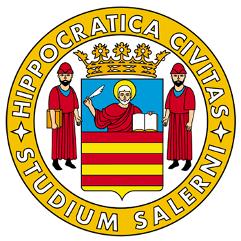
Università degli Studi di Salerno
Ateneo proponente del convegno.
AITIM
Associazione Italiana di Telemedicina e Informatica Medica.
GIAM@ITIM
Gruppo Intelligenza Artificiale in Medicina.
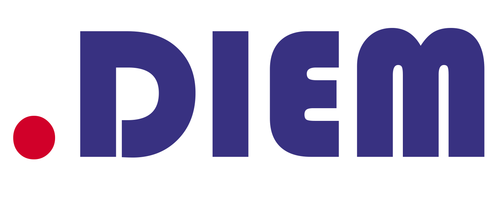
DIEM
Dipartimento di Ingegneria dell'Informazione ed Elettrica e Matematica Applicata.
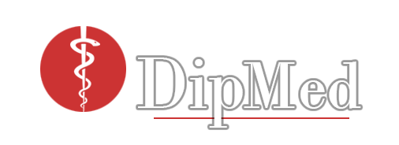
Medicina, Chirurgia e Odontoiatria
Dipartimento “Scuola Medica Salernitana”.
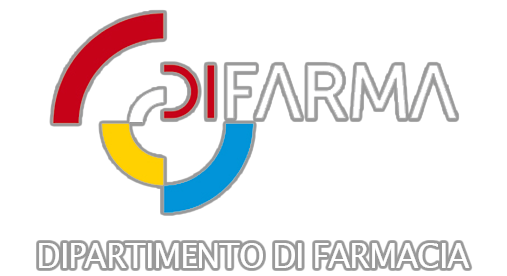
DIFARMA
Dipartimento di Farmacia.
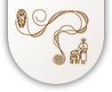
AOU Ruggi d'Aragona
Azienda Ospedaliero Universitaria San Giovanni di Dio Ruggi d'Aragona.
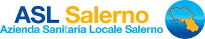
ASL Salerno
Azienda Sanitaria Locale Salerno.
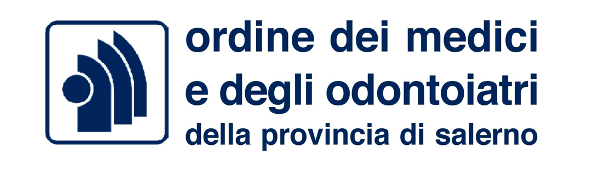
Ordine dei Medici di Salerno
Patrocinio istituzionale.
Fondazione COTEC
Fondazione per l'innovazione e la competitività tecnologica.
Il convegno si svolgerà a Palazzo Innovazione, Salerno, il 19 e 20 giugno 2026.
Per i partecipanti al convegno è prevista una convenzione con il Grand Hotel Salerno, soluzione di riferimento per il soggiorno durante le giornate del 19 e 20 giugno 2026.